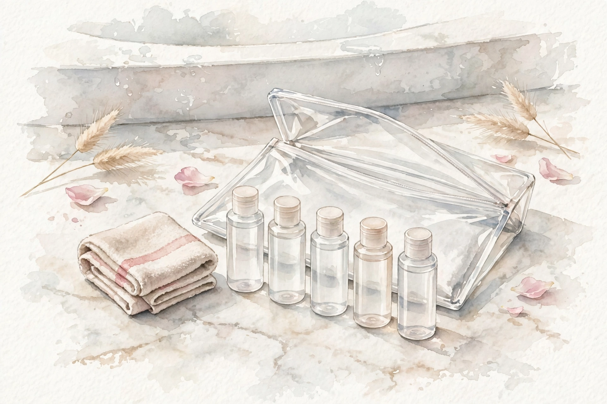

トップ ＞ ボディケア ＞ 旅行先でのボディケアの量と携帯容器
旅行先でのボディケアの量と携帯容器

旅行の荷造りで、ボディケアアイテムは「ボトルごと持つと重い、小分けすると量が分からない」という悩みの種です。この記事では、必要量の計算と、携帯容器の選び方を整理します。
量は「部位の単位×泊数」で逆算する
自宅で部位ごとに「手のひら何単位」という自分の目安を持っていると、旅行の量も計算できます。1泊あたりの使用量に泊数を掛け、予備として半日分を足すのが基本です。目安を持っていない場合は、旅行の1週間前から、1回に使う量を意識して数えておくと、自分の数字が作れます。
飛行機を使う旅行では、機内持ち込みの液体物のルール（容器の容量制限など）も確認点です。ルールは航空会社や空港の案内で確認してください。預け荷物に入れる場合は、漏れ対策がより大切になります。
携帯容器は、漏れにくさと出しやすさで選ぶ
小分け容器は、キャップの締まり具合と、口の大きさがポイントです。クリームのような硬めの質感は広口の小さいジャー、ローションのような液体は、漏れにくい中栓のあるボトルが扱いやすくなります。詰め替えた日付と中身の名前を、容器に小さく書いておくと、現地で迷いません。
詰め替えの際は、清潔な手と道具で行い、長期の保管用ではなく、旅行の期間内で使い切る量にとどめるのが管理の基本です。
現地での保管と、帰宅後の処理
宿泊先では、直射日光の当たる窓際や、暖房の近くを避けて保管します。浴室に置く場合は、湯気と水はねの当たりにくい位置が無難です。帰宅後に余った分は、元のボトルに戻さず、そのまま使い切るか、早めに使う計画に回します。
量の計算、容器の選び方、保管。この3点がそろうと、旅先でも自宅と同じ感覚でケアが続けられます。
宿泊先での手順も、自宅の型を持ち込むと安定します。到着したら、まず洗面まわりにケアの道具を並べる場所を決めます。自宅と同じ順番に並べておくと、旅先でも迷わず手順が進みます。温泉地など入浴の回数が増える旅行では、入浴後のケアの回数も増えます。その分を見込んで、量は少し多めに見積もっておくと安心です。連泊の場合は減り方を見て、足りなくなりそうなら現地で小さいサイズを買い足す判断もできます。旅先のケアは、荷物を減らすことと続けられることのバランスです。自分の単位を持っていることが、そのバランスを取る物差しになります。
帰りの荷物では、余った分と空いた容器の扱いも決めておくと楽です。空の小分け容器は、現地で洗って乾かしてから持ち帰ると、帰宅後の手入れが簡単になります。旅のケアは、準備から片付けまでを含めて、一つの手順として設計するのがおすすめです。
セラフィナ「量は単位×泊数で計算、容器には名前と日付を。旅先でもいつもの感覚で使えるね」